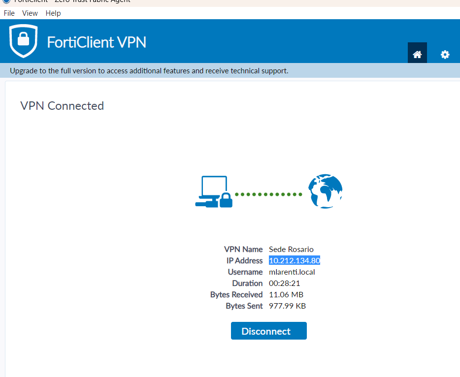

Diagnóstico pericial de falso positivo en Zabbix 7.0 LTS, evidencia en firewall FortiGate Border1, procedimiento paso a paso de habilitación de reglas y protocolo de reconocimiento formal.
Las cabinas de almacenamiento físico (HPE MSA 2040 y 2060) y los datastores de hipervisores VMware ESXi operan al 100% de capacidad sin afectación ni pérdida de datos. La alerta crítica P1 en Zabbix fue detonada porque el firewall FortiGate descarta el tráfico TCP puerto 443 (HTTPS) bajo la regla Implicit Deny.
| Parámetro | Detalle Técnico | Impacto Operativo |
|---|---|---|
| Host Afectado | SRO-STO02 (Host ID: 10727 - IP: 172.30.70.135 - HPE MSA 2060) |
Sin Impacto (100% Vivo) |
| Segundo Host | SRO-STO01 (Host ID: 10706 - IP: 172.30.70.134 - HPE MSA 2040) |
Sin Impacto (100% Vivo) |
| Disparador (Trigger) | Trigger ID 29355: HPE MSA 2060 Storage: Service is down or unavailable |
Alerta P1 (High) |
| Ítem Detonante | net.tcp.service["https", "172.30.70.135", "443"] (Item ID: 60442) |
Retorna 0 por timeout |
| Firewall Decisor | FortiGate Border1 (milicic-borde1 - IP Gateway 172.30.70.1) |
Descarta TCP SYN 443 |
| Regla Aplicada | Policy ID: Implicit Deny (Descarte por defecto) | Bloqueo Inter-VLAN |

| Prueba de Conectividad | Método de Validación | Resultado Obtenido | Diagnóstico |
|---|---|---|---|
| Ping ICMP a Storage | icmpping desde Zabbix Server |
1 (rtt: 1.06 ms, loss: 0%) |
Controladora OK |
| Almacenamiento ESXi | Telemetría VMware y Datastores | Datastores montados, 0 caídas I/O | Producción OK |
| Socket TCP 443 (HTTPS) | net.tcp.service[https, 443] |
0 (Timeout reached) |
Bloqueado en Firewall |
| API REST HPE MSA | hpe.msa.get.data |
Error: cannot get URL |
Sin Acceso API |
Para restablecer la recolección de métricas de hardware de las cabinas HPE MSA y normalizar la supervisión sin alertas espurias, se debe crear la política de seguridad correspondiente:
GRP-HPE-MSA-STORAGES conteniendo las IPs 172.30.70.134/32 y 172.30.70.135/32.MON-Zabbix-to-MSA-Storages172.30.20.61 (Host Zabbix Server).GRP-HPE-MSA-STORAGES.HTTPS (TCP 443) y PING.config firewall address
edit "HPE-MSA-STORAGE-A"
set subnet 172.30.70.134 255.255.255.255
next
edit "HPE-MSA-STORAGE-B"
set subnet 172.30.70.135 255.255.255.255
next
end
config firewall addrgrp
edit "GRP-HPE-MSA-STORAGES"
set member "HPE-MSA-STORAGE-A" "HPE-MSA-STORAGE-B"
next
end
config firewall policy
edit 0
set name "MON-Zabbix-to-MSA-Storages"
set srcintf "servers-sede"
set dstintf "servers-sede"
set srcaddr "172.30.20.61"
set dstaddr "GRP-HPE-MSA-STORAGES"
set action accept
set schedule "always"
set service "HTTPS" "PING"
set logtraffic all
next
end
Ingresar al evento en Zabbix (tr_events.php?triggerid=29355&eventid=174422629) y en Update problem marcar Acknowledge con el siguiente mensaje de auditoría:
"Falso positivo de hardware comprobado: cabinas HPE MSA y VMware ESXi operativos (ping 1.0 ms). El tráfico HTTPS TCP 443 es bloqueado por regla Implicit Deny en FortiGate. En proceso de habilitación de política."
El trigger tiene manual_close: 0 para evitar cierres manuales sin respaldo. Apenas el FortiGate permita el tráfico HTTPS, la métrica net.tcp.service pasará de 0 a 1 y Zabbix cerrará la alerta automáticamente enviando la notificación de normalización (RESOLVED) a Telegram.